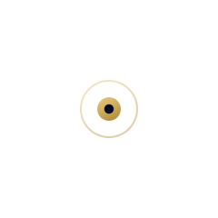
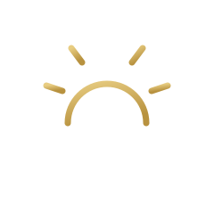
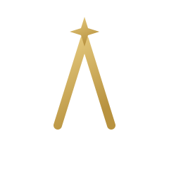
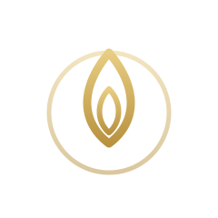

サイトと同じ「ネイビーの光彩＋ゴールド」の見え方で表示しています。気に入った案の記号をお知らせください。

中心から細い光が四方へ広がるデザイン。「光」を最も素直に表現。現在採用中の案です。
● 現在採用中
地平線から昇る太陽と光線。夜明け＝新たな始まり・希望・成長を象徴。あたたかく王道。

社名「Akari」の頭文字Aの頂に光のきらめき。ブランドと直結し、記憶に残るレターマーク。

輪（結束）の中に灯る炎。「灯を絶やさない」という理念・継承・あたたかさを表現。
中心から広がる光の軌道。グループの結束・つながり・波及を象徴。現代的で動きのある印象。
きらめく四光星。先進性・道標（みちしるべ）を象徴。シャープで力強い印象。